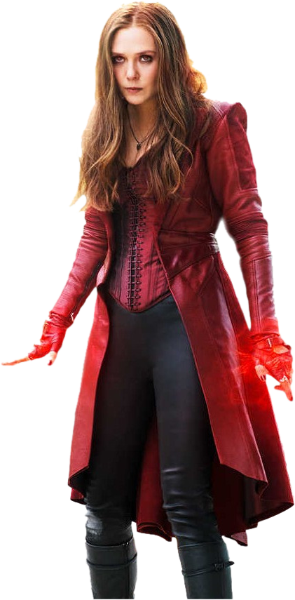

Scarlet
绯红女巫 Witch
绯红女巫（Scarlet Witch）本名旺达·姜戈·马克西莫夫（Wanda Django Maximoff），原作中是万磁王的女儿，（漫画新剧情：绯红女巫并不是万磁王的亲女儿）、快银的双胞胎姐姐（绯红女巫早出生30秒），绯红女巫的主要能力是混沌魔法（创造和湮灭物质）和修改概率。当两种能力融合在一起可以修改现实（既存在和不存在）。起初，绯红女巫和快银加入了万磁王的变种人兄弟会，后改邪归正，加入复仇者联盟。并且遇到了同为复仇者成员的机器人幻视，于是两人坠入爱河结为夫妻